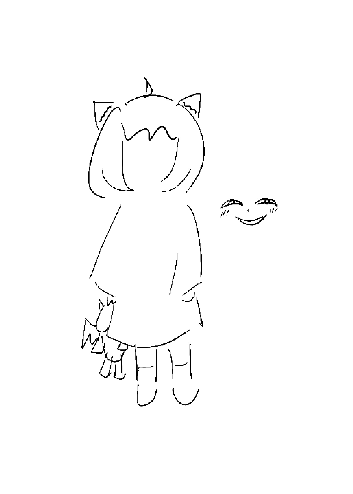

Anya Forger
My name is Anya Forger! As i mentioned before, i am a psychic who can read minds of others. i always use my superpower to save the world! For example, i helped my papa saved a whole cruise from the conspiracy of the badass organization! It is super remarkable right? Sadly, i cannot show off my superpower and i have to keep my secret forever, to prevent being caught back there...Oh, and my favourite food is peanut... i love penguins... and i love watching animes especially The Spy!

Click me to see all the missions we have on tv!